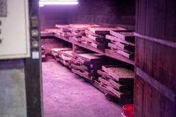

ニューロサイエンスとマーケティングの間 - Between Neuroscience and Marketing
https://kaz-ataka.hatenablog.com/
安宅和人: 残すに値する未来を
フィード
Disaster-ready2.0 — 地形が動く時代の防災をデザインする 1
1
ニューロサイエンスとマーケティングの間 - Between Neuroscience and Marketing
Oirase Stream, Aomori, Japan Leica M10-P / Summilux 50mm f1.4 / RAW 写真では、洪水に見えた 先日、故郷の富山、そして隣の石川が記録的な集中豪雨に襲われているのと、ほぼ同じタイミングで、ネパール・チベット国境では、これもまた長く語られることになるであろう事象が発生した。その写真を最初に見たとき、僕はそれを「激しい洪水」だと思った。濁流が谷を埋め、集落を呑み込んでいる。しかしNYTの衛星画像でスケールを確認して、話がまったく違うことがわかった*1。山の高所で氷河と岩盤が崩れ、氷、岩、泥、水が一体となって谷を駆け下り、地形そのものを…
6日前
集約の外側にも、国土はある — コンパクトシティが答えていないこと 81
ニューロサイエンスとマーケティングの間 - Between Neuroscience and Marketing
火入れによって保たれる茅場と、地形に沿った道 Minakami-Fujiwara, Gunma, Japan 1.4/50 Summilux, Leica M10P, RAW先日、国土計画に携わる方から連絡をいただいた。人口減少や社会経済の変化を踏まえた今後の国土像について、「風の谷」の考え方も含め、一度話を聞かせてほしいという。僕自身、かなり重要なテーマだと思っている。ただ、この問題について七年以上、100人を超える人間で様々に検討してきたことは『風の谷という希望』に相当に体系立てて書いた。その後もブログにいくつか書いている。講演や取材の依頼の大半をご辞退せざるを得ない状況でもあり、まずはそ…
14日前
Killing Me Softly——AI時代に「自らに由る」とは 2
ニューロサイエンスとマーケティングの間 - Between Neuroscience and Marketing
制約のある世界のなかでも自在に動ける力 Shodoshima island, Japan 1.4/50 Summilux, Leica M (Typ 240), RAW 学生の頃、友人たちと実によく飲み、よく語り合った。そこには何冊か必読書があり、その一冊がエーリッヒ・フロムの『自由からの逃走』（東京創元社、日高六郎訳）だった。伝統や権威という「第一次的な絆」から解放されることだけでは人は自由にならず、孤独や無力感に耐えられなければ、権威への服従や画一化へと自由を手放してしまう、そんな話だ。自由からの逃走 新版作者:エーリッヒ・フロム東京創元社Amazonあの頃、店でも部屋でもよく流れていた曲…
21日前
数えることは、見ることではない — 日本の博士課程にある二つの伸びしろ 64
ニューロサイエンスとマーケティングの間 - Between Neuroscience and Marketing
A scholar in his niche. Trinity College, Cambridge (2010) 2008年、このブログを書き始めた頃、読者の方からの質問に答える形で、「大学院教育で何ができると、人が育ったと言えるのか」という論考を書いた。気がつけば、もう18年前になる。kaz-ataka.hatenablog.com日米双方の研究大学の大学院に身を置いた目から見ると、日本の大学院における博士号と、米国のPhDは、かなり異なるものを指しているのではないか。そう整理したのが、2008年のあの論考だった。日本では博士号は、ともすれば、大学院に入り、長い時間研究を続け、論文を書き、…
2ヶ月前

価値はスケールしない。発酵する。 47
ニューロサイエンスとマーケティングの間 - Between Neuroscience and Marketing
Koji room at Horikawaya Nomura, a centuries-old soy sauce and miso brewery in Gobo, Wakayama, Japan. 文化、関係、大地には、経済とは別の時間がある 英語の culture という言葉には、少し不思議な二重性がある。一つは、人間がつくる文化。芸術、習慣、ものの見方、共有された意味の世界だ。もう一つは、生物学的なculture。微生物を培養し、育てたものを指す。ワイン、チーズ、味噌、醤油、日本酒。そこでは、目には見えない生き物の集まりが、与えられたものを別の何かへと変えていく。文化と微生物のcult…
2ヶ月前

AI時代のリーダーシップ：導くとは何か
ニューロサイエンスとマーケティングの間 - Between Neuroscience and Marketing
Amagi, Shizuoka, Japan 1.4/50 Summilux ASPH, Leica M10P, RAW AI時代のリーダーシップとは何か。そんなテーマで対談する機会があった。お相手は、前職の後輩であり長年の友人でもあるNPOクロスフィールズ代表の小沼大地さんと、越境学習を長く研究されている法政大学の石山恒貴さんだ。小沼さんは、冒頭で三つの問いを掲げた。 AI時代にリーダーに求められる力とは何か。 これからのリーダーが積むべき経験とは何か。 越境の経験が、これからの時代に果たす価値とは何か。 60分のうち、最初の15分ほどは三人とクロスフィールズの取り組みの紹介だったので、実際…
2ヶ月前
今日の飯をどう残すか：谷は育つものだ 2
ニューロサイエンスとマーケティングの間 - Between Neuroscience and Marketing
Amagi, Shizuoka, Japan 1.4/50 Summilux ASPH, Leica M10P, RAW 疎空間に必要なのは、頑張りでもハコでもなく、続くための条件である 前回、「谷は、つくるものではなく、育つものだ」という文章を書いた。いま「地方創生」として語られていることの多くは、問題設定からずれているのではないか、と。本題は「都会 vs 地方」ではなく「都市 vs 疎空間」であり、「どう人口を増やすか」ではなく「人口が増えない前提で、どう生き続けられる系にするか」なのだ、と書いた。kaz-ataka.hatenablog.com ありがたいことに、多くの反応をいただいた。…
3ヶ月前
谷は、つくるものではなく、育つものだ
ニューロサイエンスとマーケティングの間 - Between Neuroscience and Marketing
Amami, Japan 1.4/50 Summilux, RDPIII, Leica M7 『風の谷という希望』、谷本、が世に出て10か月が過ぎた。「風の谷」という希望――残すに値する未来をつくる作者:安宅和人英治出版Amazon 新しい地方創生をテーマとする国交省×NewsPicksのイベントに招かれたり*1、はたまた、地方創生そのものをテーマとした雑誌Ambitions REGIONの創刊号の巻頭特集*2でも取り上げられた。様々な土地が、急に「谷化」に目を向け始めている。だからこそ、本当のことを伝える時が来ている気がしている。谷本は意図的に日本やどこかの土地を主語として書くことはしなかっ…
3ヶ月前
AI native時代の袋小路 ― 見立てる力はどこから来るのか
ニューロサイエンスとマーケティングの間 - Between Neuroscience and Marketing
美山、和歌山、日本 1.4/50 Summilux ASPH, Leica M10P, RAW このところずっと頭の中から離れない一つの課題についてここに置けたらと思う。2月の頭に、「スマイルカーブの終焉と『コ』の字型社会の到来」というブログをポストした。これからサイバー空間で閉じうる領域では、人間に残るのは、ディレクションとダメ出しだけになる、という話だ。kaz-ataka.hatenablog.com仮に、そのサイバーに閉じてしまう世界*1の場合、ディレクションを出したり、ダメ出しを行う人は今はいくらでもいる。莫大な経験を積んできた人たちだ。一方で、現在すでに米国西海岸のエンジニアの世界な…
3ヶ月前
年間二千人じゃだめなんですか？ — 社会は高度知性をどう使うのか
ニューロサイエンスとマーケティングの間 - Between Neuroscience and Marketing
Numbered, in the storm. Rusutsu, Japan Leica M10P, 1.4/50 Summilux ASPH, RAW 2015年春、文部科学省とROIS（情報・システム研究機構）による緊急の集中討議で、ビッグデータ・AI時代の人材育成についての総合検討が行われていた*1。その際、僕は、 リテラシーレベル（年間約50万人） 専門レベル（年間5万人） 上の約1割がここに進む トップ人材・リーダー層レベル（年間5000人） そのまた1割がここに到達 という三層構造での人材育成を提案した。「これは一部の専門家の話ではない」 からであり、裾野の広がりが国としてのその分…
4ヶ月前
AIの透明性とはなにか？
ニューロサイエンスとマーケティングの間 - Between Neuroscience and Marketing
Inspiration is not traceable Daruma Temple, Takasaki, Gunma, Japan Leica M10P, 1.4/50 Summilux ASPH, RAW いつだったか、映画her*1の主人公サマンサ（パーソナリティを持つAI）の声であった、女優スカーレット・ヨハンソンが、OpenAIが生み出す音声に酷似しているということでちょっとした揉め事になったことがあった。www.wired.comサム・アルトマン（OpenAIの発起人）はスカーレットに事前に打診したが、色々思案した上、彼女がNOといったにも関わらず、自分の声そっくりの声が使われてい…
6ヶ月前
第六の象限
ニューロサイエンスとマーケティングの間 - Between Neuroscience and Marketing
Leica M10P, 1.4/50 Summilux ASPH, RAW 2015年の秋、ハーバード・ビジネス・レビューの誌上、そして経産省 産業構造審議会の場で、ひとつの地図を示した。縦軸にモノ・カネ、横軸にデータ・キカイをとった産業マトリックスだ。当時、多くの論者の目はGAFAを筆頭とするNew economyの台頭に向いていた。しかし僕が注目していたのはそこではなかった。リアルとサイバー両方の強みを持つ「未開領域」に、第三の勢力が現れる。そこが本当の主戦場になる、と。ーその見立ては、おおむね当たった。TeslaがGM (General Motors) の企業価値（時価総額）を初めて上回…
6ヶ月前
2026年は1984なのか ― AIと国家、そして合法の解釈権
ニューロサイエンスとマーケティングの間 - Between Neuroscience and Marketing
Leica M10P, 1.4/50 Summilux ASPH, RAW米国防総省が提示した"all lawful purposes"（法的に許されるすべての用途）での利用を認める契約文書を、Anthropicが拒否したというニュースを数日前に見た*1。その契約には、全自動の殺傷可能な兵器や、国民全体をリアルタイムで監視するようなものが含まれうるということが理由のようだ。この動きには、どこか既視感のようなものを覚えた。国家は強制権限の発動を示唆し、AIプラットフォーム（PF）を抱える企業は「良心」を掲げて線を引く。OpenAIやGoogleは別の形で応じ、社内では反発の署名が広がる。AI P…
6ヶ月前
閉じる世界と閉じない世界
ニューロサイエンスとマーケティングの間 - Between Neuroscience and Marketing
A fleeting moment of perfection Leica M10P, 1.4/50 Summilux ASPH, RAW 先日、友人に誘われて天ぷらの名店に伺う機会があった。日本でも指折りと言われる店だ。カウンターに座ると、大将が食材、そしてこちらに静かに向かい合っている。食べる速度、箸の止まり方、会話のリズム。そのすべてを読みながら、次の一品を油に入れるタイミングを決めている。食材の水分、その日の湿度、油の対流状態。調理の過程は隠されることなく、目の前で展開される。完成した瞬間がピークであり、それ以外にその天ぷらが存在できる時間はない。たまたま隣には陶芸家の友人がいた。その…
7ヶ月前
関数主権 — AI時代に問われるもう一つの主権
ニューロサイエンスとマーケティングの間 - Between Neuroscience and Marketing
Putney, VT, U.S.A. Leica M7, 1.4/50 Summilux, RDPIIIこの半年ぐらい、ソブリンAI（国家主権AI）をどう考えたらいいんですかね、という質問をよく受ける。質問をされる人は政治家の方だったり、政府の方だったりと色々だ。ただ、話をしていて、違和感が残ることが多い。その問いが、いつも途中で次のようなかたちに替わっていくことが多いからだ。 国産のLLMは必要なのか？ GPUをうむ技術と生産力を国内に持つべきか？ それが置かれる計算資源をこの国内に持つべきか？ それを支える電力が足りない問題をどう考えたらいいのか？ 米中のbig playersが兆円単位で…
7ヶ月前
スマイルカーブの終焉と「コ」の字型社会の到来 ― AI時代に価値はどこへ消えるのか
ニューロサイエンスとマーケティングの間 - Between Neuroscience and Marketing
Onomichi, Japan LEICA M (Typ 240), 1.4/50 Summilux, RAW 先日、経産省の局長になった旧知の友人と話していたときのこと。AIの話になり、僕はこう言った。「サイバー空間で閉じうる領域については、最終的に残るのは"ディレクション"と"ダメ出し"だけになりますよね。それ以外は、極端に自動化される」しばらく間があって、「ああ、それだ」と彼は言った。作るのはAI。回すのもAI。最適化するのもAI。人間の仕事は、方向を決める、出てきたものを評価する、もう一段引き上げる、最終的に責任を持つ。その往復になる。これは生産性向上の話ではない。社会にこれから一気に…
7ヶ月前
現場と構造のあいだ
ニューロサイエンスとマーケティングの間 - Between Neuroscience and Marketing
Golconda Fort, Hyderabad, India LEICA M (Typ 240), 1.4/50 Summilux, RAW 「現場に来てから物を言え」この言葉には、確かに誠実さがある。空気の湿度、土の匂い、人の間合い。そこに立たなければ見えないものは多い。現場で汗を流す人々の経験と勘は、どんなモデルよりも豊かな情報を含んでいる。けれども、もう一つ忘れてはならないことがある。現場にいることと、"構造 (structure）"を理解していることは、同じではない、ということだ。本稿でいう「構造」とは、制度や組織ではなく、固定費、人口、時間、エネルギーといった条件が織りなす関係のこ…
7ヶ月前
疎空間のエコノミクスはなぜ壊れて見えるのか
ニューロサイエンスとマーケティングの間 - Between Neuroscience and Marketing
Somewhere in the United States 疎空間の経済が成り立っていない、という言い方は、ときに強い反発を招く。再分配があるのは当然ではないか。それは経済の失敗ではなく、税や財政の設計の問題ではないか。そうした声はもっともに聞こえる。しかし、こうした反応の中では、再分配が原因で、疎空間の経済が成り立たなくなっている、と理解されてしまいがちだ*1。だが、実際には順序が逆だ。疎空間では、再分配が行われる以前の段階で、支えるために必要なコストと、現実的に生み出せる富とのあいだに、すでに大きな差が生じている。下図が示すように、一人当たり社会維持コストと社会維持負担が概ね釣り合うため…
7ヶ月前
因果より先に、構造を見る
ニューロサイエンスとマーケティングの間 - Between Neuroscience and Marketing
End-Cretaceous Tsunami Deposit and K-Pg Boundary National Museum of Nature and Science, Tokyo Leica M10P, 1.4/50 Summilux ASPH, RAW 先日、僕の研究会と共同研究している企業の方が、学生の発表を聞いてこう言った。「相関ばかり出てくるが、因果の視点が足りないのではないか」そのとき僕はこう答えた。「いまやろうとしているのは、『顧客体験の質』*1そのものをデータから定義することです。定義できれば、条件による差分として因果は自然に見えるようになります」-多くの人は、「因果こそ…
7ヶ月前
経済効果という謎概念について
ニューロサイエンスとマーケティングの間 - Between Neuroscience and Marketing
National Museum of Nature and Science, Tokyo Leica M10P, 1.4/50 Summilux ASPH, RAW また選挙が行われる。こういうイベントが行われるたびに、決まって出てくるのが「経済効果〇〇億円」という話だ。選挙に伴うポスター印刷、会場設営、警備、弁当代、宿泊費、、、。 それらを積み上げると、かなりの金額になるらしい。そんな中で「選挙でこれだけ経済が回るのはいいことだ」というコメントも出てくる。なるほど、数字としては確かにそうだろうな、と思う。ただ、どうにも腑に落ちない、というか市民を少々煙に巻く感じが、いつも残る。たしかに回って…
7ヶ月前
名前のない能力について
ニューロサイエンスとマーケティングの間 - Between Neuroscience and Marketing
Somewhere in Japan — LEICA M (Typ 240), Summilux 50mm f/1.4, RAWいまの社会では、能力の有無はずいぶん単純に測られている。 市場で価格がつくか。組織に所属しているか。成果が数値化できるか。この条件を満たせば「能力がある」とされ、満たさなければ「評価不能」とされる。 履歴書に書けるか。給与が発生するか。評価制度に載るか。もちろん、これらは重要だ。 だが、本当にそれだけで、人の能力を測っていいのだろうか。-こういう人たちがいる。 三人の子どもを育てながら、寝たきりの高齢者の介護をしている人 子どもは二人だが、一人に重い障害があり、日々の…
7ヶ月前
AIが成功しすぎると、社会は壊れる
ニューロサイエンスとマーケティングの間 - Between Neuroscience and Marketing
New York City, Leica M7, 1.4/50 Summilux, PN400N 先日、「教育が成功しすぎると、社会は壊れる」というエントリを書いた*1。プラトンが本当に怖れていたのは、無知な市民ではなく、よく教育され、正しさを内面化し、それゆえに誰にも止められなくなった市民ではないか、という話だ。またその後、Weekly Ochiaiにて、落合陽一氏とAIの賢さについて語り合い、人間が勝てないと思う瞬間が今後普通になってくるという話をした*2。書きながら、これは教育の話にとどまらないと感じていたが、それがほぼ確信に変わった。正しさが誰にも止められなくなる。同じことが、いまAI…
8ヶ月前
教育が成功しすぎると、社会は壊れる
ニューロサイエンスとマーケティングの間 - Between Neuroscience and Marketing
SONY ILCE-7, 1.4/50 Summilux, RAW 先日のゼミで、疎空間における教育について議論していたとき、こんな問いが、その場に置かれた。プラトンが一番怖れていたのは、 無知な市民か？ それとも、優秀だが「教育されすぎた」市民か？一見すると哲学史の話に聞こえるかもしれない。 だが、これは古代ギリシャの話ではない。 むしろ、いま私たちがどんな教育を善だと思っているか、その前提そのものを問う問いだ。-議論は自然と二つに分かれた。無知な市民は、操作されやすく、誤った判断をする。 一方で、よく教育された市民は、全体を見渡し、合理的に振る舞える。多くの教育論は、後者を善とする。 教育…
8ヶ月前
言葉が持つ思考の粒度
ニューロサイエンスとマーケティングの間 - Between Neuroscience and Marketing
鎮国寺 宗像 Leica M10P, 50mm f/1.4 Summilux ASPH, RAW 前回、failure を「失敗」と訳した瞬間に起きるズレについて書いた。 設計の話が、いつの間にか責任や評価の話に変質してしまう、という違和感の話だ。kaz-ataka.hatenablog.comただ、書いてみて見えてきたのは、これは特定の単語の翻訳の問題ではない、ということだった。もっと一般的に、言語がどの粒度の思考を許すか、という話なのだと思う。-言葉は、意味を運ぶ道具だと考えられがちだ。だが実際には、言葉はそれ以上のものを持っている。それは、 どこまでを一つとして扱うか、 何と何を分けて考…
8ヶ月前
Failureは「失敗」ではない
ニューロサイエンスとマーケティングの間 - Between Neuroscience and Marketing
※Disaster-ready の日本語訳を進める中で浮かび上がった、翻訳以前の話です。 Leica M7, 50mm f/1.4 Summilux, RDP III Mediumで英語の連載を書き、それを日本語に訳す過程で、どうしても引っかかって離れない言葉がある。それが failure だ。日本語では、ほぼ自動的に「失敗」と訳される。 しかし、この訳語は、今回の Disaster-ready の議論においては、どうにも座りが悪い。違和感の正体ははっきりしている。 英語の failure と、日本語の「失敗」は、指しているものが違うのだ。-英語で failure は、必ずしも誰かの判断ミスを…
8ヶ月前
知性は、どう育っていくのか
ニューロサイエンスとマーケティングの間 - Between Neuroscience and Marketing
海士町 隠岐 Leica M10P, 50mm f/1.4 Summilux ASPH, RAW 先日の講義で学生からもらった質問について、前編に続いて残り4つの問いを考えてみたい。（前編はこちら） 「内発的な問い」は、どの瞬間に生まれるのか？ 教育は、どこまで問いを与え、どこから手放すべきか？ 不安は「消すべきもの」なのか、「抱えたまま進むもの」なのか？ 生体験と市場評価（食っていく力）は、どこで接続されるのか？ -自分の心に自然に浮かぶ「内発的な問いを立てよう」と言われることは多い。でも、そんなことを言われても、問いは「立てよう」とした瞬間には、ほとんど生まれることはない。これが事業だとか…
8ヶ月前
知性は、どこで立ち上がるのか
ニューロサイエンスとマーケティングの間 - Between Neuroscience and Marketing
まだ言葉になる前の、かすかな兆し。 Leica M7, 50mm f/1.4 Summilux, RDP III 駒沢オリンピック公園-原文を英文で書いたブログ（以下のMedium連載）の翻訳が続いたので、いつもながらの日本語オリジナルなブログも書けたらと思う。medium.com僕が大学で担当している講義（ゼミではない）の一つでは、自然言語処理、機械学習や深層学習、LLM、AI的な議論と共に、並行して「知性とは何か」「知性の本質」についての議論を少しずつしている*1。-そんな中で、先日、返されてきたコメント群から以下のような問いが浮かんできた。 アウトプットが「知覚を鍛える」とは、具体的に何…
8ヶ月前
Disaster-Ready：停止状態に陥らない社会をデザインする
ニューロサイエンスとマーケティングの間 - Between Neuroscience and Marketing
本稿は従来の持続可能性の枠組みを超えた社会の存続可能性を探求するMedium連載"Designing for Viability"（存続可能性のためのデザイン）シリーズ第5回を、日本語読者向けに翻訳したものです。前号より続く。medium.com Why survival is designed — not improvised 生存は即興ではなく、デザインされるものである Tuscany, near Montepulciano — 機能し続ける景観 Leica M7 / Summilux 50mm f1.4 / Fujichrome RDPIII 災害と聞いて、多くの人が思い浮かべるもの人は…
8ヶ月前
開疎化：孤立なき疎な系をデザインする
ニューロサイエンスとマーケティングの間 - Between Neuroscience and Marketing
本稿は従来の持続可能性の枠組みを超えた社会の存続可能性を探求するMedium連載"Designing for Viability"（存続可能性のためのデザイン）シリーズ第4回を、日本語読者向けに翻訳したものです。第3回（日本語版）はこちら。medium.com_「疎であること」はしばしば誤解されている。前回の論考で、僕は不連続な衝撃（shock）がもはや稀ではなくなったとき、密度は脆弱性を増幅すると論じた。人々が「疎」という言葉を聞くと、孤立、衰退、分断──歴史に取り残された場所──を想像しがちだ。対照的に、密度は強さの象徴と見なされる。効率的で、生産的で、強靭であると。この前提は、もはや成り…
8ヶ月前
都市集中という「隠れた」システミック・リスク
ニューロサイエンスとマーケティングの間 - Between Neuroscience and Marketing
この連載では、従来語られてきた「持続可能性（サステナビリティ）」という枠組みを一度外し、社会がそもそも“壊れずに成り立ち続けられるのか（viableであり続けられるのか）”という問いから、社会設計を考え直しています。 Shibuya Station area, Tokyo — ongoing large-scale redevelopment. Leica M10-P · Summilux-M 50mm f/1.4 ASPH · RAW※本稿は、Medium連載"Designing for Viability"シリーズ第3弾を、日本語読者向けに翻訳したものです。第2弾（日本語版）はこちら。me…
8ヶ月前